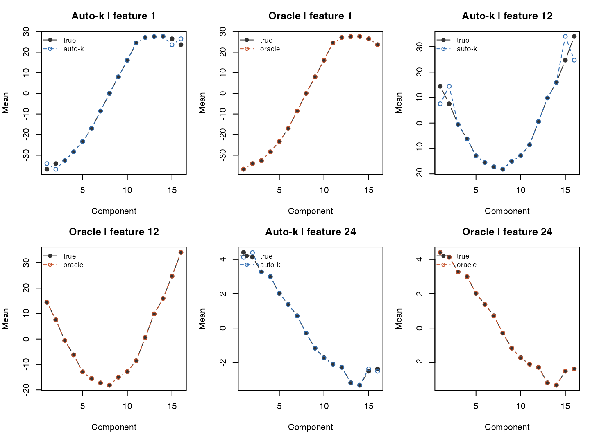

CAVI Initialization Diagnostics on a Harder Model-Matched Benchmark
cavi_initialization_diagnostics.RmdThis note is a follow-up to the easier model-matched sanity check.
The goal here is not to ask whether the single-ordering
cavi pipeline can ever work; that basic question is already
answered by the easier benchmark. Instead, the goal is to understand how
sensitive the pipeline is to initialization when we:
- increase the number of mixture components,
- raise the noise level a little,
- and look more carefully at
fiedlerinitialization.
1 A small but important default-detail
For the current cavi() implementation, the default
discretization is "quantile", not "equal".
This comes from the cavi() argument default in 09_cavi.R.
By contrast, the lower-level ordering initializers in 06_cSmoothEM.R
default to "equal".
In this note we explicitly use discretization = "equal"
because it is a more demanding initialization benchmark in this
model-matched simulator.
2 Harder model-matched simulation
Relative to the easier sanity check, we increase:
-
Kfrom 12 to 16, - and the feature noise range from
[0.04, 0.12]to[0.05, 0.15].
We keep the same broad lambda_j range so parameter
recovery remains informative.
sim <- simulate_cavi_toy(
n = 1600,
d = 24,
K = 16,
rw_q = 2,
lambda_range = c(0.1, 15),
sigma_range = c(0.05, 0.15),
ridge = 1e-3,
seed = 11
)
X <- sim$X
cat("Data dimensions:", nrow(X), "x", ncol(X), "\n")
#> Data dimensions: 1600 x 24
cat("K =", ncol(sim$mu), "\n")
#> K = 16
cat("True sigma range:",
sprintf("[%.3f, %.3f]", sqrt(min(sim$sigma2)), sqrt(max(sim$sigma2))), "\n")
#> True sigma range: [0.051, 0.129]
cat("True lambda range:",
sprintf("[%.3f, %.3f]", min(sim$lambda_vec), max(sim$lambda_vec)), "\n")
#> True lambda range: [0.100, 11.963]3 Helper functions
make_gamma_from_z <- function(z, K) {
gamma <- matrix(0, nrow = length(z), ncol = K)
gamma[cbind(seq_along(z), z)] <- 1
gamma
}
align_mpcurve_fit <- function(fit, sim) {
est_mu <- fit$fit$posterior$mean
true_mu <- sim$mu
z_hat <- max.col(fit$gamma, ties.method = "first")
score <- function(mu_est, z_est) {
c(
z_acc = mean(z_est == sim$z),
mu_cor = mean(vapply(seq_len(nrow(true_mu)), function(j) {
suppressWarnings(stats::cor(mu_est[j, ], true_mu[j, ]))
}, numeric(1)), na.rm = TRUE),
mu_rmse = sqrt(mean((mu_est - true_mu)^2))
)
}
forward <- score(est_mu, z_hat)
reverse <- score(est_mu[, ncol(est_mu):1, drop = FALSE], ncol(est_mu) + 1L - z_hat)
if (reverse["z_acc"] > forward["z_acc"]) {
list(
flip = TRUE,
metrics = reverse,
mu_hat = est_mu[, ncol(est_mu):1, drop = FALSE]
)
} else {
list(
flip = FALSE,
metrics = forward,
mu_hat = est_mu
)
}
}
summarise_fit <- function(fit, sim, label) {
aligned <- align_mpcurve_fit(fit, sim)
data.frame(
fit = label,
z_accuracy = aligned$metrics["z_acc"],
mean_curve_cor = aligned$metrics["mu_cor"],
mu_rmse = aligned$metrics["mu_rmse"],
sigma_cor = suppressWarnings(stats::cor(log(fit$params$sigma2), log(sim$sigma2))),
lambda_cor = suppressWarnings(stats::cor(log(fit$fit$lambda_vec), log(sim$lambda_vec))),
min_elbo_delta = min(diff(fit$elbo_trace)),
stringsAsFactors = FALSE
)
}
init_snapshot <- function(method) {
fit0 <- cavi(
X,
K = 16,
method = method,
rw_q = 2,
ridge = 1e-3,
discretization = "equal",
max_iter = 0,
tol = 1e-8,
verbose = FALSE
)
fit1 <- do_cavi(fit0, iter = 1L, tol = 0, verbose = FALSE)
s0 <- align_mpcurve_fit(as_mpcurve(fit0), sim)$metrics
s1 <- align_mpcurve_fit(as_mpcurve(fit1), sim)$metrics
data.frame(
method = method,
z_acc_iter0 = s0["z_acc"],
mean_curve_cor_iter0 = s0["mu_cor"],
z_acc_iter1 = s1["z_acc"],
mean_curve_cor_iter1 = s1["mu_cor"],
stringsAsFactors = FALSE
)
}4 Default versus oracle under equal discretization
The first fit uses normal initialization. The second fit is the same
algorithm, but it is initialized with the true ordering through
responsibilities_init.
gamma_true <- make_gamma_from_z(sim$z, K = 16)
fit_equal_default <- fit_mpcurve(
X,
algorithm = "cavi",
method = "PCA",
K = 16,
rw_q = 2,
iter = 200,
ridge = 1e-3,
tol = 1e-8,
discretization = "equal",
verbose = FALSE
)
fit_equal_oracle <- fit_mpcurve(
X,
algorithm = "cavi",
K = 16,
rw_q = 2,
iter = 200,
ridge = 1e-3,
tol = 1e-8,
discretization = "equal",
responsibilities_init = gamma_true,
verbose = FALSE
)
equal_tbl <- rbind(
summarise_fit(fit_equal_default, sim, "default + equal"),
summarise_fit(fit_equal_oracle, sim, "oracle + equal")
)
print(equal_tbl, row.names = FALSE)
#> fit z_accuracy mean_curve_cor mu_rmse sigma_cor lambda_cor
#> default + equal 0.76125 0.9908451 1.163495904 -0.1335716 0.9473555
#> oracle + equal 1.00000 0.9999941 0.007487933 0.9967315 0.9659732
#> min_elbo_delta
#> 6.687940e-07
#> 3.271271e-08This is already a useful sanity check:
- with
equaldiscretization, the benchmark is no longer trivial for the default initializer, - but once the true ordering is supplied, the same
cavifitting pipeline again recovers the model almost perfectly.
So the harder regime is still fair, but it is now testing initialization rather than just the variational optimizer.
5 Why the earlier default example looked easy
The previous easy sanity check used the default cavi
discretization, namely "quantile". On this harder
benchmark, quantile still makes the initialization problem
much easier.
fit_quantile_default <- fit_mpcurve(
X,
algorithm = "cavi",
method = "PCA",
K = 16,
rw_q = 2,
iter = 200,
ridge = 1e-3,
tol = 1e-8,
discretization = "quantile",
verbose = FALSE
)
fit_quantile_oracle <- fit_mpcurve(
X,
algorithm = "cavi",
K = 16,
rw_q = 2,
iter = 200,
ridge = 1e-3,
tol = 1e-8,
discretization = "quantile",
responsibilities_init = gamma_true,
verbose = FALSE
)
quantile_tbl <- rbind(
summarise_fit(fit_quantile_default, sim, "default + quantile"),
summarise_fit(fit_quantile_oracle, sim, "oracle + quantile")
)
print(quantile_tbl, row.names = FALSE)
#> fit z_accuracy mean_curve_cor mu_rmse sigma_cor lambda_cor
#> default + quantile 1 0.9999941 0.007487933 0.9967316 0.9659732
#> oracle + quantile 1 0.9999941 0.007487933 0.9967315 0.9659732
#> min_elbo_delta
#> 1.930338e-05
#> 3.271271e-08So the earlier benchmark was fair in the sense of not using true labels during default fitting, but it was still an easy benchmark because:
- the simulator is perfectly model-matched,
- the sample size is large,
- and the default
quantilediscretization is very forgiving.
6 Initialization-only comparison
We now look directly at the initialization quality before and after
one CAVI sweep, using discretization = "equal"
throughout.
init_tbl <- do.call(rbind, lapply(c("PCA", "fiedler", "random"), init_snapshot))
print(init_tbl, row.names = FALSE)
#> method z_acc_iter0 mean_curve_cor_iter0 z_acc_iter1 mean_curve_cor_iter1
#> PCA 0.761250 0.9908456 0.761250 0.9908452
#> fiedler 0.114375 0.7997269 0.105000 0.7437300
#> random 0.066875 -0.2732783 0.066875 -0.2733460This makes the picture much clearer:
-
PCAis still a strong initializer here, -
randomis poor and barely improves after one sweep, - and
fiedleris much worse thanPCA.
7 Updated Fiedler diagnostic under automatic graph repair
The current fiedler_ordering() no longer behaves quite
like the earlier version. If the user leaves k at its
default and the kNN graph is disconnected, the function now
automatically increases k until the graph becomes
connected.
So the right question is no longer “does the default Fiedler graph fragment?”, but rather:
- how much does the default auto-adjustment increase
k, - does that repair the initialization itself,
- and after the repaired initialization is passed into
cavi, how much of the remaining gap is really an optimizer problem?
summarise_fiedler_init <- function(X, sim, K, discretization = "quantile", k = NULL) {
init <- if (is.null(k)) {
initialize_ordering_csmooth(
X,
K = K,
method = "fiedler",
discretization = discretization,
modelName = "homoskedastic"
)
} else {
initialize_ordering_csmooth(
X,
K = K,
method = "fiedler",
discretization = discretization,
modelName = "homoskedastic",
k = k
)
}
keep_idx <- init$keep_idx %||% seq_len(nrow(X))
z_sub <- sim$z[keep_idx]
cr <- init$cluster_rank
acc_forward <- mean(cr == z_sub)
acc_reverse <- mean((K + 1L - cr) == z_sub)
data.frame(
k_label = if (is.null(k)) "default auto-k" else sprintf("fixed k=%d", k),
k_used = init$ordering$k_used,
n_components = init$ordering$n_components,
coverage = length(keep_idx) / nrow(X),
init_accuracy = max(acc_forward, acc_reverse),
stringsAsFactors = FALSE
)
}On the same harder benchmark as above, the default auto-adjustment does exactly what it was designed to do: it forces the graph to be connected and restores full coverage.
fiedler_worked <- rbind(
summarise_fiedler_init(X, sim, K = 16, discretization = "quantile"),
summarise_fiedler_init(X, sim, K = 16, discretization = "quantile", k = 15)
)
print(fiedler_worked, row.names = FALSE)
#> k_label k_used n_components coverage init_accuracy
#> default auto-k 113 1 1.000000 0.4300000
#> fixed k=15 15 16 0.070625 0.0619469This is already a meaningful improvement over the old behavior:
- the default Fiedler initializer no longer drops almost all cells,
- it uses a much larger effective neighborhood size,
- and the resulting initialization is materially better than the old
fixed
k = 15graph.
At the same time, the initialization is still far from oracle. That is an important clue: graph repair helps, but it does not by itself make this clustered model-matched simulator especially well suited to Fiedler geometry.
8 Fiedler sanity check after the full CAVI fit
The next question is whether the repaired Fiedler initialization
produces a sensible full cavi fit. To check that, we
compare:
-
fiedler auto-k: the current default behavior, -
oracle ordering: the samecavialgorithm, but initialized with the true latent ordering.
We use discretization = "quantile" here because that is
the current cavi default and therefore the fairest
“current-package” sanity check.
run_fiedler_seed <- function(seed) {
sim_i <- simulate_cavi_toy(
n = 1600,
d = 24,
K = 16,
rw_q = 2,
lambda_range = c(0.1, 15),
sigma_range = c(0.05, 0.15),
ridge = 1e-3,
seed = seed
)
init_auto <- summarise_fiedler_init(
sim_i$X,
sim_i,
K = 16,
discretization = "quantile"
)
gamma_true <- make_gamma_from_z(sim_i$z, K = 16)
fit_auto <- fit_mpcurve(
sim_i$X,
algorithm = "cavi",
method = "fiedler",
K = 16,
rw_q = 2,
iter = 200,
ridge = 1e-3,
tol = 1e-8,
discretization = "quantile",
verbose = FALSE
)
fit_oracle <- fit_mpcurve(
sim_i$X,
algorithm = "cavi",
K = 16,
rw_q = 2,
iter = 200,
ridge = 1e-3,
tol = 1e-8,
discretization = "quantile",
responsibilities_init = gamma_true,
verbose = FALSE
)
stopifnot(all(diff(fit_auto$elbo_trace) >= -1e-8))
stopifnot(all(diff(fit_oracle$elbo_trace) >= -1e-8))
auto_row <- summarise_fit(fit_auto, sim_i, "fiedler auto-k")
auto_row$seed <- seed
auto_row$k_used <- init_auto$k_used
auto_row$init_accuracy <- init_auto$init_accuracy
auto_row$coverage <- init_auto$coverage
oracle_row <- summarise_fit(fit_oracle, sim_i, "oracle ordering")
oracle_row$seed <- seed
oracle_row$k_used <- NA_integer_
oracle_row$init_accuracy <- NA_real_
oracle_row$coverage <- NA_real_
rbind(auto_row, oracle_row)
}
fiedler_repeat <- do.call(rbind, lapply(c(11, 17, 23), run_fiedler_seed))
print(fiedler_repeat, row.names = FALSE)
#> fit z_accuracy mean_curve_cor mu_rmse sigma_cor lambda_cor
#> fiedler auto-k 0.630625 0.8869122 3.531191741 0.99673151 0.9228093
#> oracle ordering 1.000000 0.9999941 0.007487933 0.99673155 0.9659732
#> fiedler auto-k 0.759375 0.9734556 2.026345094 0.99855609 0.8687777
#> oracle ordering 1.000000 0.9999955 0.010139580 0.99855587 0.9468978
#> fiedler auto-k 0.182500 0.6374345 5.502693565 0.09242158 0.6197930
#> oracle ordering 1.000000 0.9999934 0.009355409 0.99886908 0.9733164
#> min_elbo_delta seed k_used init_accuracy coverage
#> 2.632991e-05 11 113 0.430000 1
#> 3.271271e-08 11 NA NA NA
#> 1.393765e-05 17 114 0.666250 1
#> 8.340285e-07 17 NA NA NA
#> 8.688611e-05 23 195 0.273125 1
#> 2.192075e-06 23 NA NA NA
fiedler_metric_avg <- aggregate(
cbind(
z_accuracy,
mean_curve_cor,
mu_rmse,
sigma_cor,
lambda_cor,
min_elbo_delta
) ~ fit,
data = fiedler_repeat,
FUN = function(x) mean(x, na.rm = TRUE)
)
fiedler_init_avg <- aggregate(
cbind(k_used, init_accuracy, coverage) ~ fit,
data = subset(fiedler_repeat, fit == "fiedler auto-k"),
FUN = function(x) mean(x, na.rm = TRUE)
)
fiedler_avg <- merge(fiedler_metric_avg, fiedler_init_avg, by = "fit", all.x = TRUE)
print(fiedler_avg, row.names = FALSE)
#> fit z_accuracy mean_curve_cor mu_rmse sigma_cor lambda_cor
#> fiedler auto-k 0.5241667 0.8326008 3.686743467 0.6959031 0.8037933
#> oracle ordering 1.0000000 0.9999943 0.008994307 0.9980522 0.9620625
#> min_elbo_delta k_used init_accuracy coverage
#> 4.238456e-05 140.6667 0.4564583 1
#> 1.019605e-06 NA NA NAThis multi-seed sanity check gives a fairly nuanced answer:
- the updated default Fiedler path is now optimization-stable, with monotone ELBO traces in all repeated runs;
- on this benchmark it often recovers the smooth trajectories and feature-specific parameters reasonably well;
- but the discrete ordering recovery is still much more variable than with the oracle initialization.
That last point matters. It says the remaining weakness is not a non-monotone optimizer bug. The main limitation is still initialization geometry.
9 Representative trajectory recovery
To make the comparison more concrete, the next figure shows one representative seed from the repeated sanity check.
sim_rep <- simulate_cavi_toy(
n = 1600,
d = 24,
K = 16,
rw_q = 2,
lambda_range = c(0.1, 15),
sigma_range = c(0.05, 0.15),
ridge = 1e-3,
seed = 17
)
fit_rep_auto <- fit_mpcurve(
sim_rep$X,
algorithm = "cavi",
method = "fiedler",
K = 16,
rw_q = 2,
iter = 200,
ridge = 1e-3,
tol = 1e-8,
discretization = "quantile",
verbose = FALSE
)
fit_rep_oracle <- fit_mpcurve(
sim_rep$X,
algorithm = "cavi",
K = 16,
rw_q = 2,
iter = 200,
ridge = 1e-3,
tol = 1e-8,
discretization = "quantile",
responsibilities_init = make_gamma_from_z(sim_rep$z, 16),
verbose = FALSE
)
aligned_auto <- align_mpcurve_fit(fit_rep_auto, sim_rep)
aligned_oracle <- align_mpcurve_fit(fit_rep_oracle, sim_rep)
feat_idx <- c(1L, ceiling(nrow(sim_rep$mu) / 2), nrow(sim_rep$mu))
op <- par(mfrow = c(2, 3), mar = c(4, 4, 3, 1))
for (col in seq_along(feat_idx)) {
j <- feat_idx[col]
ylim_j <- range(
sim_rep$mu[j, ],
aligned_auto$mu_hat[j, ],
aligned_oracle$mu_hat[j, ]
)
plot(seq_len(ncol(sim_rep$mu)), sim_rep$mu[j, ], type = "b", pch = 19,
ylim = ylim_j, xlab = "Component", ylab = "Mean",
main = sprintf("Auto-k | feature %d", j), col = "grey20")
lines(seq_len(ncol(sim_rep$mu)), aligned_auto$mu_hat[j, ], type = "b",
pch = 1, lty = 2, col = "#2F6DB3")
legend("topleft", legend = c("true", "auto-k"), col = c("grey20", "#2F6DB3"),
lty = c(1, 2), pch = c(19, 1), bty = "n", cex = 0.85)
plot(seq_len(ncol(sim_rep$mu)), sim_rep$mu[j, ], type = "b", pch = 19,
ylim = ylim_j, xlab = "Component", ylab = "Mean",
main = sprintf("Oracle | feature %d", j), col = "grey20")
lines(seq_len(ncol(sim_rep$mu)), aligned_oracle$mu_hat[j, ], type = "b",
pch = 1, lty = 2, col = "#C7522A")
legend("topleft", legend = c("true", "oracle"), col = c("grey20", "#C7522A"),
lty = c(1, 2), pch = c(19, 1), bty = "n", cex = 0.85)
}
Representative true and inferred trajectories under the updated Fiedler initialization (seed 17).
par(op)For this representative seed, the updated Fiedler initializer gives a trajectory estimate that is clearly in the right regime, even though it still does not match the oracle fit exactly.
10 Takeaway
The updated Fiedler sanity check clarifies four things:
- the new default behavior does repair disconnected graphs by
increasing
kautomatically; - that repair meaningfully improves initialization coverage and
accuracy over the old fixed
k = 15behavior; - the downstream
cavifit remains monotone in its ELBO trace; - but even after graph repair,
fiedleris still less reliable than oracle initialization on this clustered model-matched simulator.
So the most honest high-level summary is:
- the automatic graph repair fixed a real usability problem in Fiedler;
- it improved the initializer in a genuine way;
- but it did not change the deeper geometry mismatch between this simulator and what Fiedler likes to see;
- and that is why
PCAremains the safer default for this particular single-ordering benchmark.